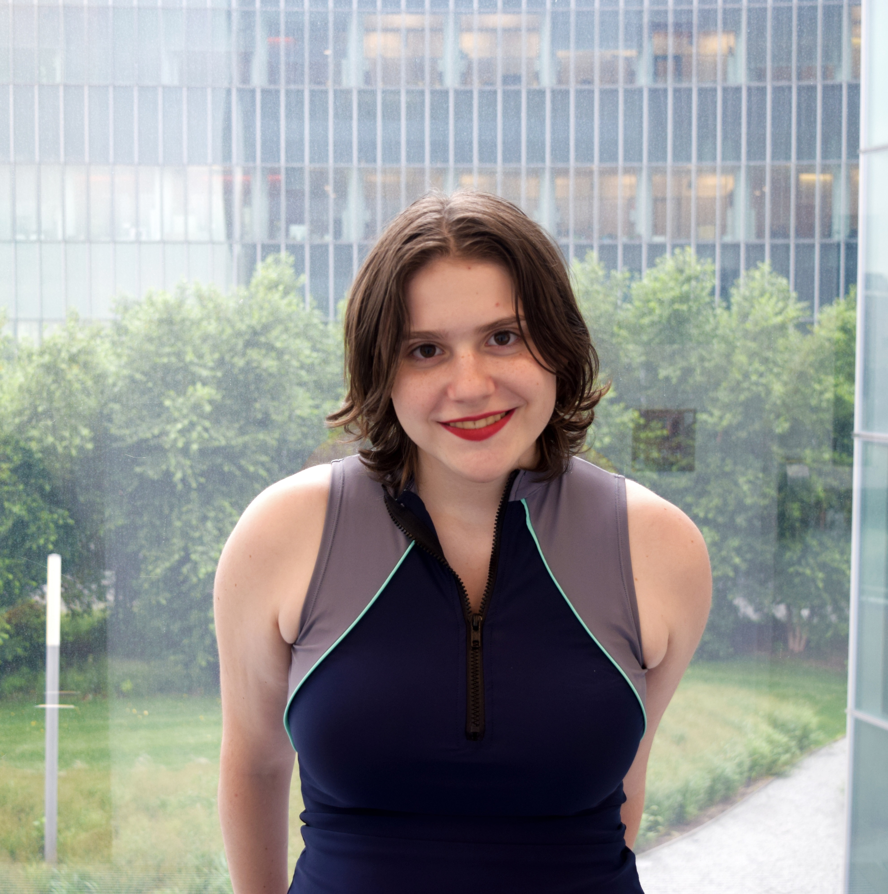
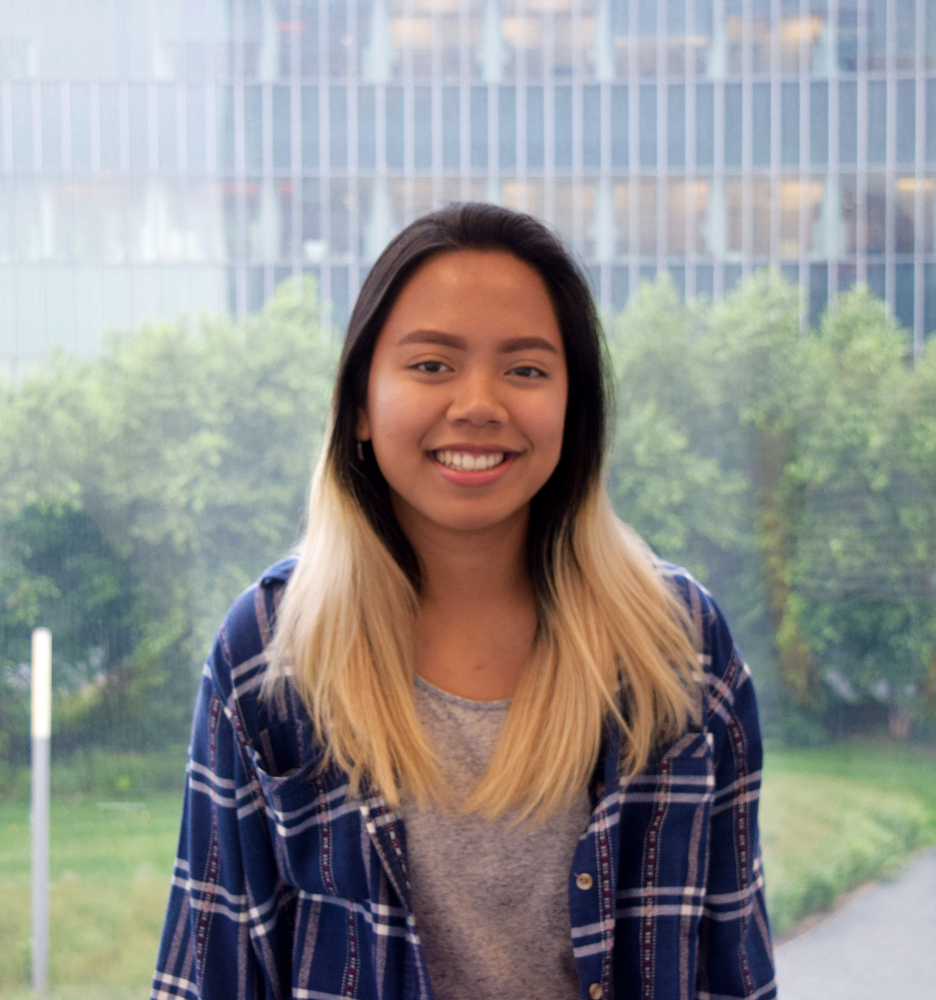

I am currently a 17 year old rising senior attending James Madison High School in Brooklyn. I joined Girls Who Code because I greatly enjoyed the two coding classes I took in school, and wanted to learn more about the subject. The world is moving in the direction of technology, and I wish to be a part of it. I love to read, play video games, hang out with friends, and snack on sweets in my free time, when I’m not stressing out over school.
Marisleysis de la Cruz
I am currently a 15 year old rising junior attending the High School of American Studies at Lehman College in the Bronx. I joined Girls Who Code because of how much my brother enjoyed it. Ever since I was a young girl I liked to work with computers and since my computer always got viruses I would always try to remove them. I chose to do this project because I myself struggled with being body-confident and think it’s important to learn to appreciate your body.
Kyla Garcia

I am currently 17 years old and attend the High School of American Studies at Lehman College in the Bronx. I joined Girls Who Code because I wanted to explore the different careers within the STEM field. Furthermore, my family is very involved with computers and I wanted to learn more about them. I love drawing, listening to music, cooking, and hanging out with my friends.
 I am currently a 15 year old rising junior attending the High School of American Studies at Lehman College in the Bronx. I joined Girls Who Code because of how much my brother enjoyed it. Ever since I was a young girl I liked to work with computers and since my computer always got viruses I would always try to remove them. I chose to do this project because I myself struggled with being body-confident and think it’s important to learn to appreciate your body.
I am currently a 15 year old rising junior attending the High School of American Studies at Lehman College in the Bronx. I joined Girls Who Code because of how much my brother enjoyed it. Ever since I was a young girl I liked to work with computers and since my computer always got viruses I would always try to remove them. I chose to do this project because I myself struggled with being body-confident and think it’s important to learn to appreciate your body.